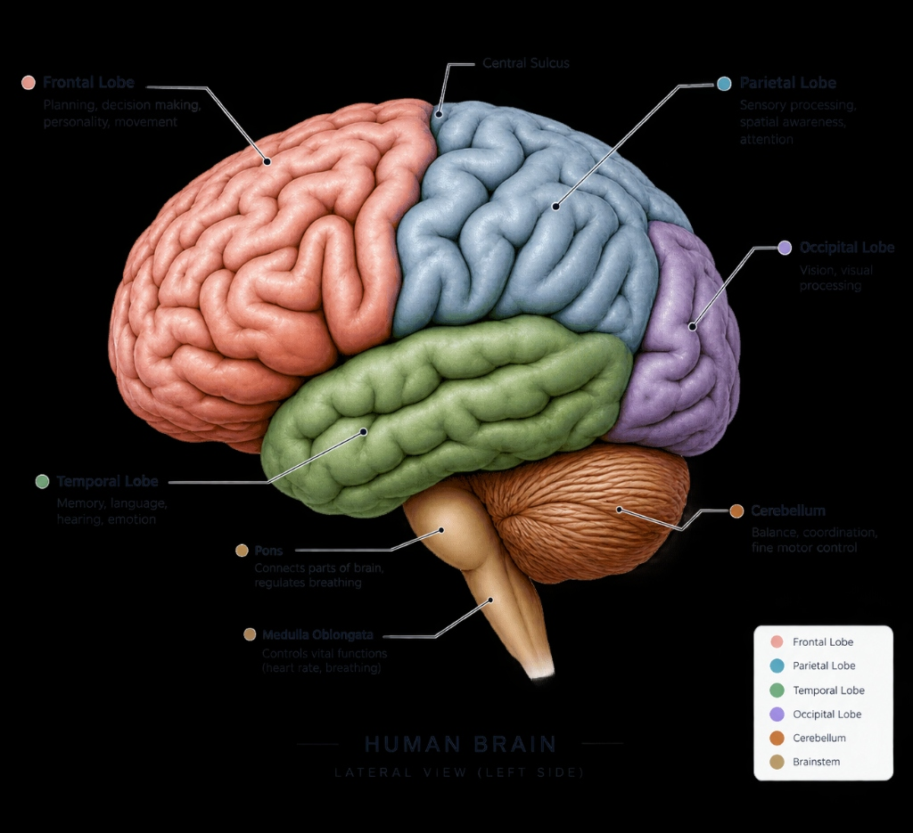

DAILY CLINICAL INSIGHT
DSM-5-TR · APA
A clinical atlas of the mind
University-grade clinical study companion, multi-axial diagnostic framework, and structured examination workspace.
DSM-5-TR
ICD-11
Better Understanding
CONTINUE READING
1.1 What Are Psychological Disorders?
CHAPTERS STUDIED
0 / 43
QUIZZES COMPLETED
0
SAVED NOTES
0
CURRICULUM MASTERY
0%
ACTIVE RECALL
Ready
5
Cards due for spaced retrieval review today.
Quick Recall — Build stronger memory.
Spaced Repetition — Long-term retention.
Progress Tracking — See your growth.
RECOMMENDED NEXT
Curriculum Priority
What Are Psychological Disorders?
First unstudied chapter in Volume I (Foundations). High-yield examination topic.
STUDY PULSE
🔥 0-day streak
Keep the streak going!
Consistency builds mastery.
Less
More
CURRICULUM ARCHITECTURE
Curriculum Mastery Heatmap
43 chapters across 9 clinical volumes. Luminance reflects deterministic multi-axial mastery (reading completion, spaced retrieval retention, and quiz accuracy).
PLATE I · NEUROANATOMY ATLAS
Cortical & Subcortical Topography

Frontal Lobe (Brodmann 4, 6, 9–12, 44–47): Executive functioning, working memory, emotional regulation, and motor planning. Implicated in ADHD, Schizophrenia, and Mood Disorders.
SYLLABUS BLUEPRINT